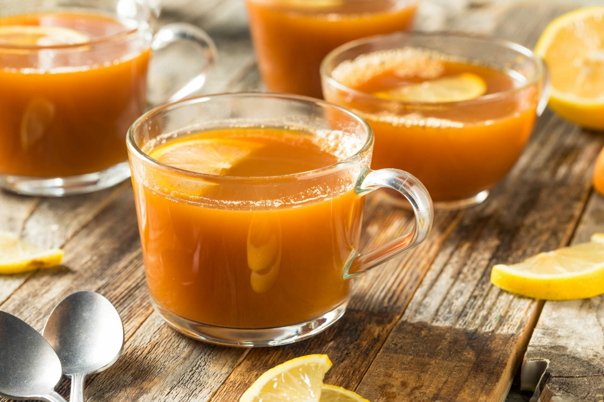

Russian Tea Mix

This recipe was passed down to me by my grandmother (who isn't Russian)
I've been drinking this since I lived in Alaska as a kid under 10.
I loved it so much that I had to get the recipe from her,
even when I was that young. So she or my mother
would go into the kitchen and help me mix it up right
until I knew what I was doing.
I haven't had this in years.
I'll have to go buy some ingredients.
Ingredients
- 2 cups "Tang"-orange flavored instant breakfast drink mix (enough for 8 quarts)
- 1 large package instant lemonade mix (enough for 2 quarts)
- 1 cup instant tea
- 1+1/2 cup sugar
- 1 teaspoon cinnamon
- 1/2 teaspoon cloves
Steps
- Combine ingredients
- Mix well
- Store in an airtight container
- To serve, stir 2 heaping teaspoons of mix into 1 cup of hot water
- Makes about 4 cups of mix
- Enjoy!